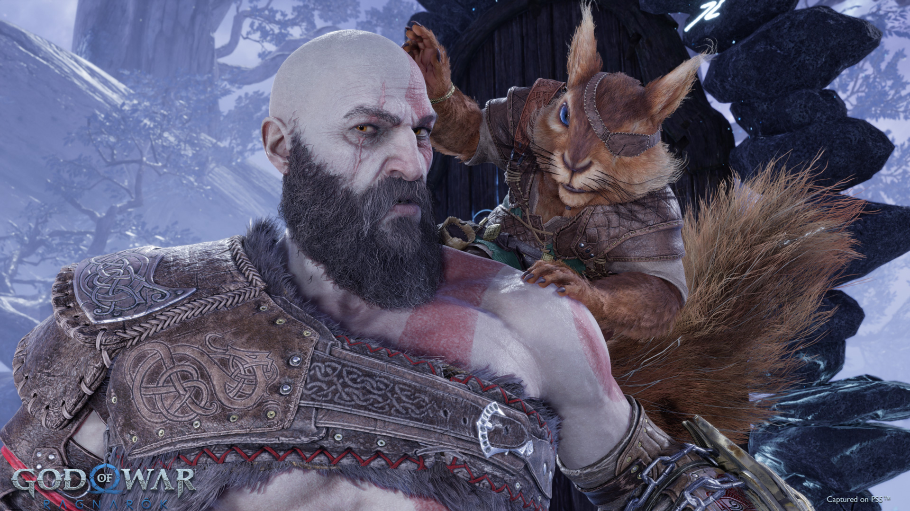

*God of War: Ragnarok* continúa la saga de Kratos y Atreus tras los eventos del juego anterior. El Fimbulwinter, el invierno eterno, anuncia el fin del mundo según la mitología nórdica.
Padre e hijo deben enfrentarse a dioses como Thor y Odín mientras descubren el verdadero destino de Atreus, quien resulta ser Loki. Juntos desafían profecías mientras luchan por cambiar su destino.
Explora todos los reinos de la mitología nórdica, desde Midgard hasta Asgard, enfrentándote a criaturas míticas y dioses legendarios en la aventura más grande de Kratos.
